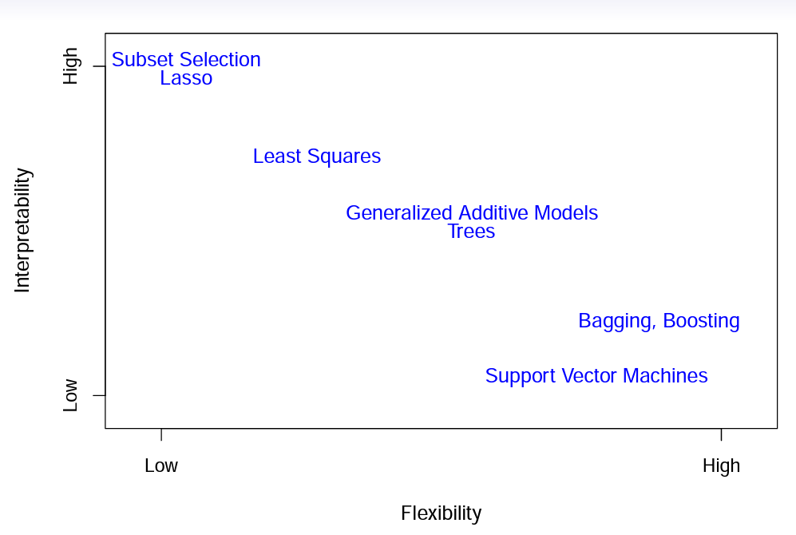

2 Aprendizaje Estadístico
| Tipo | |
|---|---|
| Slides: | https://hastie.su.domains/ISLR2/Slides/Ch2_Statistical_Learning.pdf |
| Lab-html: | https://hastie.su.domains/ISLR2/Labs/Rmarkdown_Notebooks/Ch2-statlearn-lab.html |
| Lab-Rscript: | https://hastie.su.domains/ISLR2/Labs/R_Labs/Ch2-statlearn-lab.R |
Nota Víctor: en las slides de este tema del libro se da una visión general del aprendizaje estadístico.
Por ello, como es lógico, el Lab se dedica a una introducción a R, por lo que aquí se omite.
Adicionalmente se enlaza aquí el material elaborado por Emilio López Cano sobre introducción al aprendizaje estadístico:
| Tipo | |
|---|---|
| Slides: | https://lcano.com/b/ae/slides/MUMADE_01_01_intro.html#1 |
| Manual: | https://www.lcano.com/b/ae/_book/intro.html |
2.1 Datos de entrenamiento y test
El nombre de Aprendizaje viene del hecho de tomar un conjunto de datos y utilizarlos como datos de entrenamiento, en inglés train, para que “el modelo entrene/aprenda”. Una vez determinado/especificado el modelo, basado en los datos de entrenamiento, se evalúa su rendimiento/precisión utilizando otro conjunto de datos denominado de test, de prueba o de validación (a lo largo del material se irán utilizando indistintamente dichos términos).
Existen distintas maneras de medir el rendimiento/precisión de los modelos. En cada uno de los siguientes capítulos se especificará la medida o medidas que se utilizan para ello, que de modo genérico se denomina medida o tasa de error. La intuición indica, y la práctica lo confirma, que la medida/tasa de error de entrenamiento suele ser demasiado optimista: tiende a subestimar la medida/tasa de error de test. Ésta última es una medida/tasa de error más realista, en el sentido de que en la práctica estaremos interesados en el rendimiento de nuestro modelo, no en los datos que usamos para ajustar el modelo, sino en los posibles nuevos datos que se obtengan.
Para poner en práctica este enfoque se suele dividir el conjunto de datos disponible en dichos subconjuntos de entrenamiento y test, completamente separados (sin ningún elemento en común). Es habitual tomar como datos de entrenamiento entre un 80% y un 90%, considerando el resto como datos de test. En el anexo Herramientas se detallan diversas maneras de obtener dichos conjuntos, en función de los datos/variables disponibles.
2.2 Técnicas de AE
No es para nada un resumen, pero la figura de más abajo, tomada de las slides originales, sirve para ver distintos métodos de modelización estadística que vamos a ver en este material y “ubicarlos” en esas dos dimensiones de interpretabilidad y flexibilidad.
